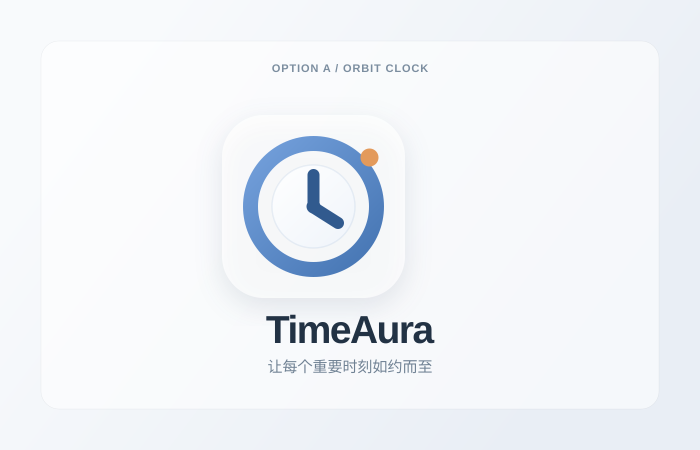
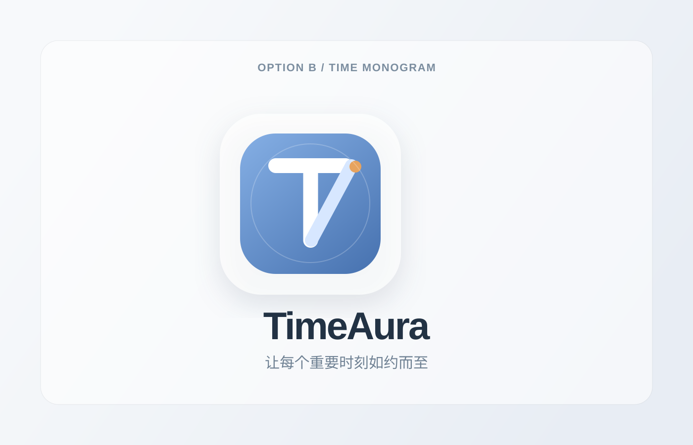
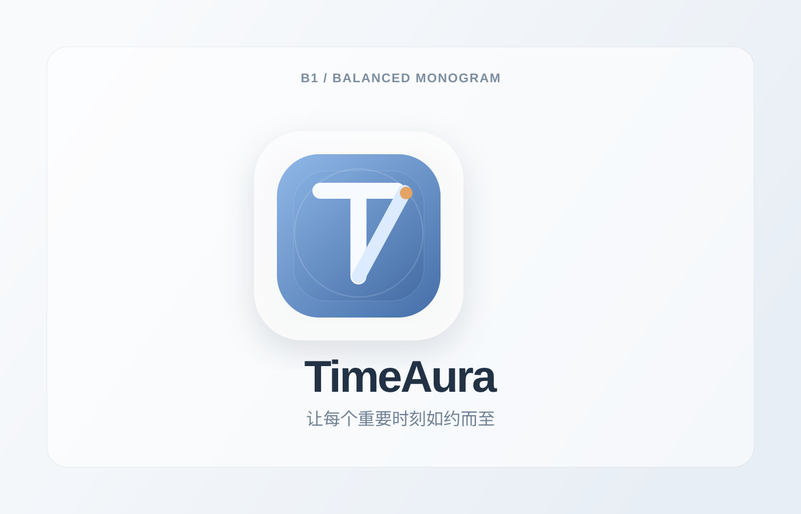
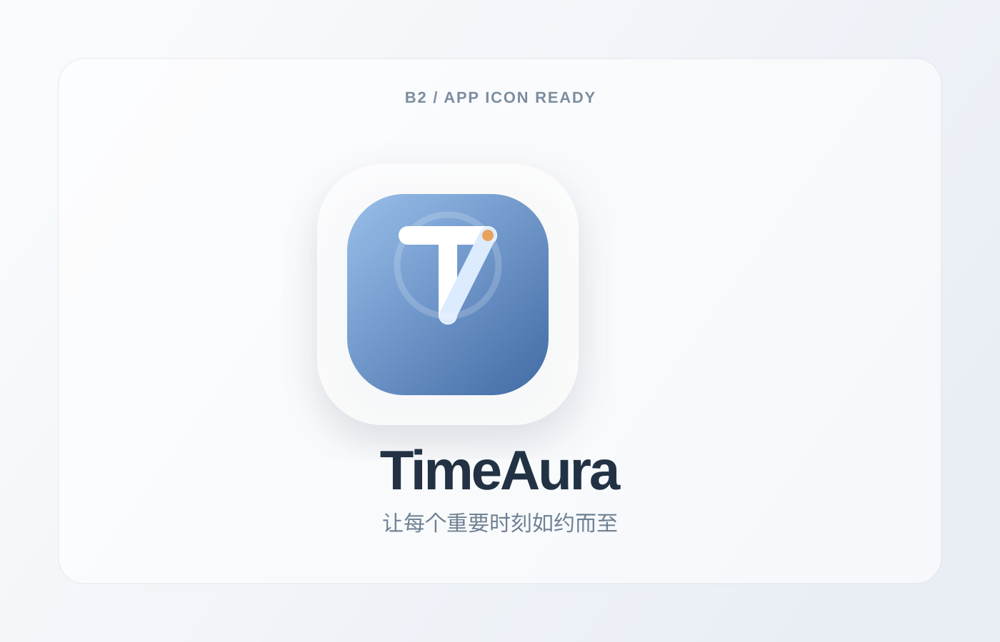
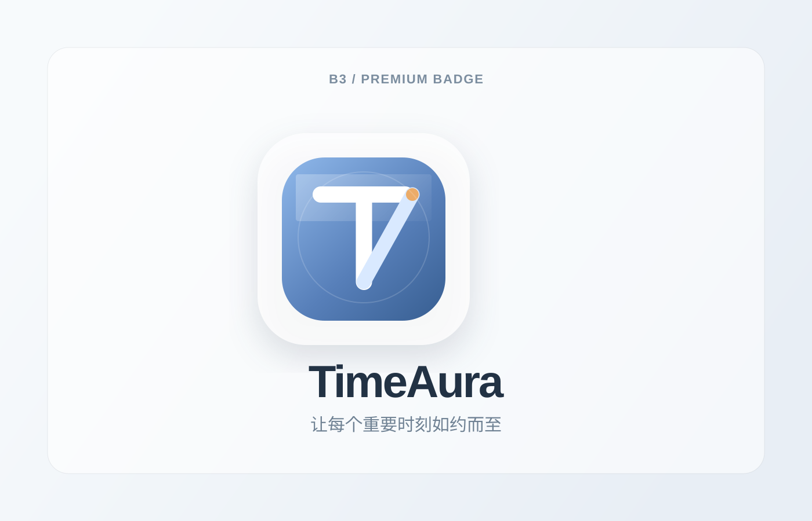
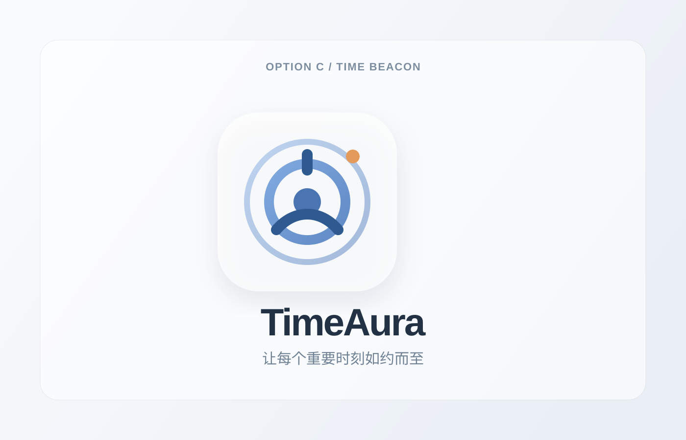
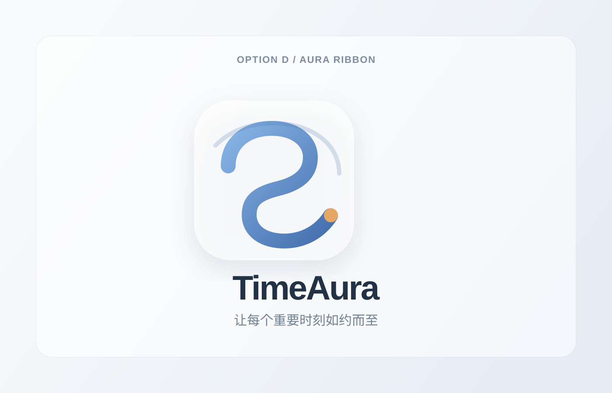

A / Orbit Clock 最稳，时间与到点提醒感最明确，适合桌面效率工具。TimeAura Logo Options
原始 4 个方向保留，同时新增 3 个基于 B 的精修版。B 系列现在更接近可直接继续落地 App 图标与品牌字标的状态。

B / Time Monogram 品牌识别更强，适合后续做字母图标和启动图。
B1 / Balanced Monogram 更平衡，时间感和品牌感都在线，适合作为主标继续细修。
B2 / App Icon Ready 更像真正的桌面应用图标，形体更饱满，缩小后识别也更稳。
B3 / Premium Badge 更偏品牌与高级感，适合官网、启动页和品牌展示。
C / Time Beacon 更偏提醒、信号、智能触达，AI 感更强一点。
D / Aura Ribbon 形态更柔和，品牌化空间大，但时间指向没有 A 明确。